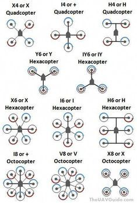

What is a Drone Frame?
A drone frame is the structural backbone of a UAV. It holds motors, propellers,
electronics, payload, and landing gear while maintaining correct geometry for
stable flight.
Frame selection directly affects:
- Stability
- Payload capacity
- Redundancy
- Flight efficiency
- Camera field of view
How Drone Frames Are Classified
Drone frames are classified based on:
- Number of rotors
- Geometric layout of arms
Quadcopter Frames (4 Rotors)
Quad + Configuration
- Motors aligned with front, back, left, right
- Simpler control logic
- Rarely used today
Quad X Configuration (Most Common)
- Motors placed at 45° angles
- Balanced thrust distribution
- Used in racing, camera, and hobby drones
Quad H Configuration
- Wider body section
- More space for batteries and payload
- Common in mapping and surveying drones
Quad Y / V Configuration
- Asymmetric layouts
- Used in experimental or niche designs
Key Limitation of Quads: No motor redundancy
Hexacopter Frames (6 Rotors)
Hexa + Configuration
- Symmetrical design
- Improved yaw authority
Hexa X Configuration (Most Common)
- Better efficiency than Quad
- Can tolerate single motor failure (limited)
- Used in professional UAVs
Hexa Y6 (Coaxial)
- 6 motors on 3 arms (top + bottom)
- Compact size
- Lower efficiency than flat hexa
Key Advantage: Redundancy + higher payload
Octocopter Frames (8 Rotors)
Octa + / Octa X
- Very high payload capacity
- Strong redundancy
- Used in cinema and industrial drones
Octa X8 (Coaxial)
- 8 motors on 4 arms
- Compact heavy-lift design
- Reduced efficiency compared to flat octa
Key Trade-off: Weight, cost, and power consumption
Frame Materials
- Carbon Fiber: Lightweight, strong, expensive
- Plastic: Cheap, flexible, used in beginner drones
- Aluminum: Strong but heavy
How to Choose the Right Frame
- Choose rotor count based on payload and redundancy
- Select geometry based on camera and space requirements
- Ensure frame supports propeller size
- Balance strength vs weight
Common Mistakes
- Choosing quad frame for heavy payloads
- Ignoring propeller clearance
- Overloading small frames
- Poor vibration isolation